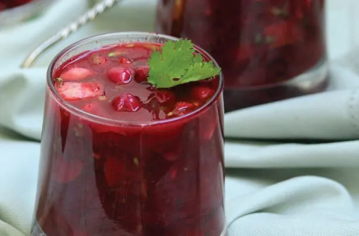

მამალიგა

დადგით წყალი ქვაბში და მიიყვანეთ ადუღებამდე. დაუმატეთ სიმინდის ფქვილი ნელ-ნელა, თან მუდმივად ურიეთ, რათა არ წარმოიქმნას გორგლები. დაბალზე დაიყვანეთ ცეცხლი და გააგრძელეთ ხარშვა დაბალ ცეცხლზე დაახლოებით 20-25 წუთი. ხშირად ურიეთ, რათა ფქვილი ქვაბის ძირზე არ მიიწვას და მამალიგაც მზადაა.
ქართული საზაფხულო წვნიანი - ალუბლისა და ატმის ჭრიანტელი
ატამი - 1 ჭიქა
ალუბალი, უკურკო - 4 ჭიქა
კიტრი - 2 ცალი
ნიორი, დანაყილი ან დაჭრილი - 2 კბილი
ქინძი - 1 კონა
მარილი
წითელი წიწაკა